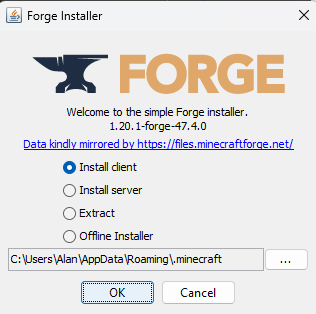

Installing Forge
- For mac: Install the Oracle JDK
- For intel based macs: https://download.oracle.com/java/24/latest/jdk-24_macos-x64_bin.tar.gz
- For silicon based macs: https://download.oracle.com/java/24/latest/jdk-24_macos-aarch64_bin.dmg
- Download Forge installer from: https://files.minecraftforge.net/net/minecraftforge/forge/index_1.20.1.html *! There will be an ads page, wait for 5 seconds and click skip!*
- Open the Forge installer (.jar file)
- Accept any security warnings
- For mac: If apple denies opening:
- Open System Settings
- Go to privacy and security
- Go to the security section
- If you opened the file, there will be a message, "forge-1.20...taller.jar" was blocked to protect your Mac.
- Click Open Anyway and authorize warnings.
-
Install for "Client" (default option)
 - Go back to Minecraft Launcher
- Choose the new "Forge 1.20.1" profile from the dropdown
- Click "Play" to launch
- Your game is now ready for mods!